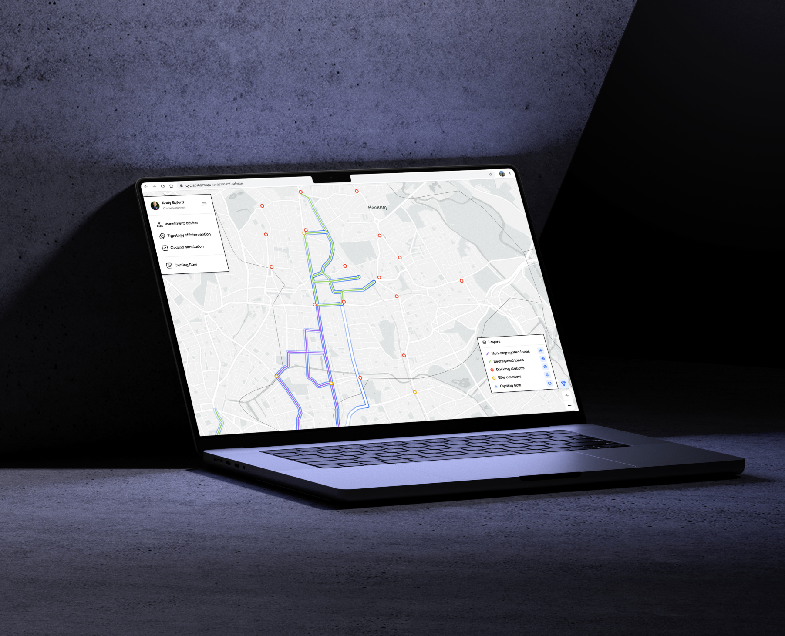
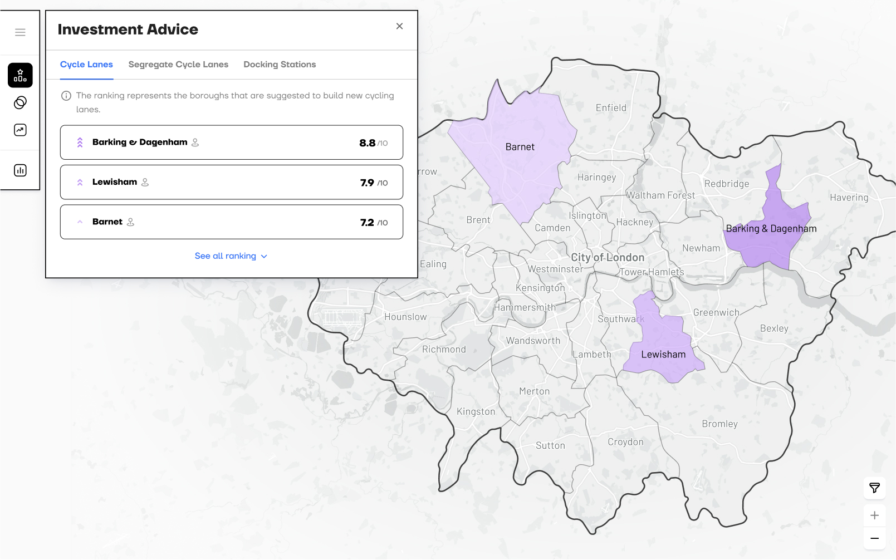
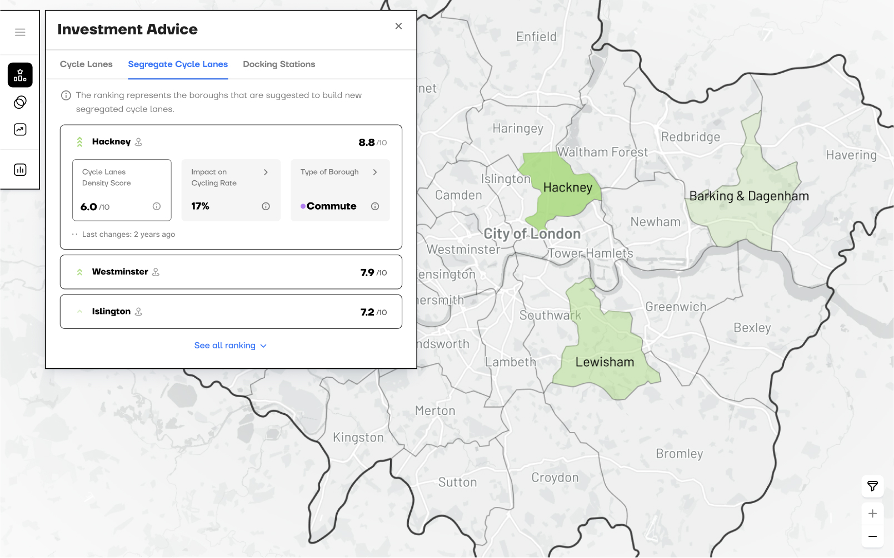
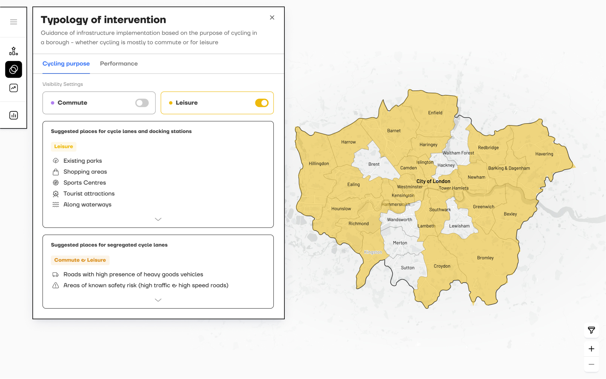
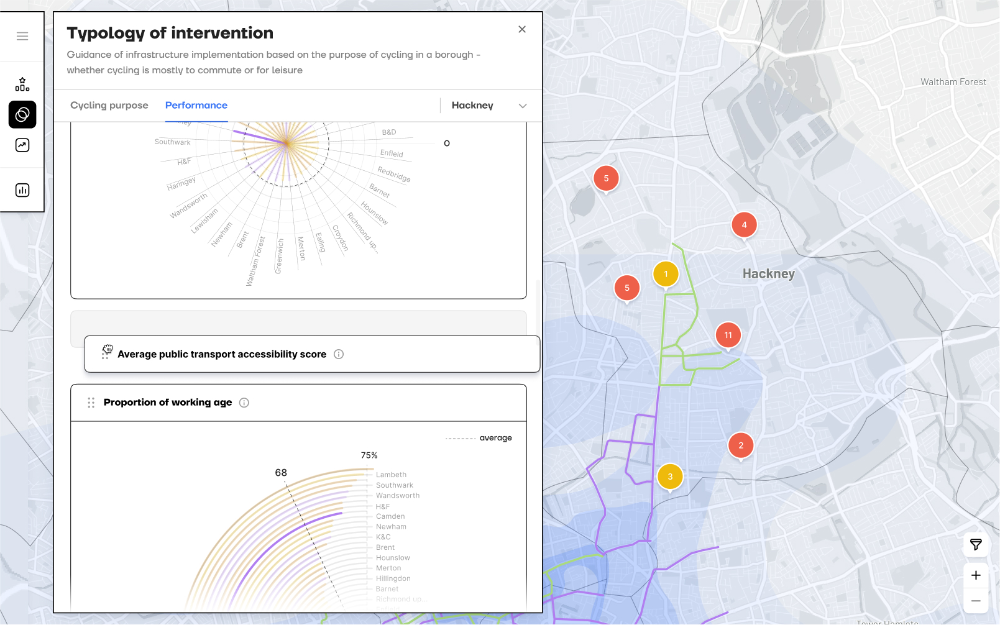
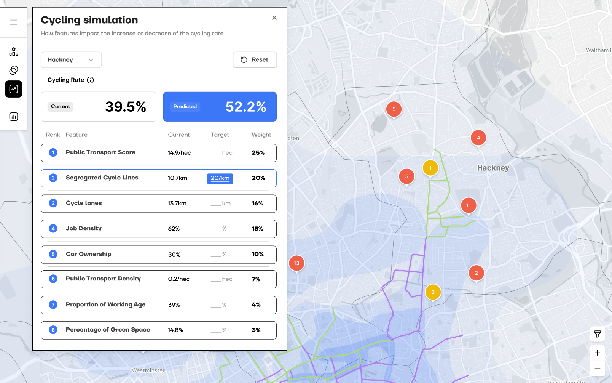
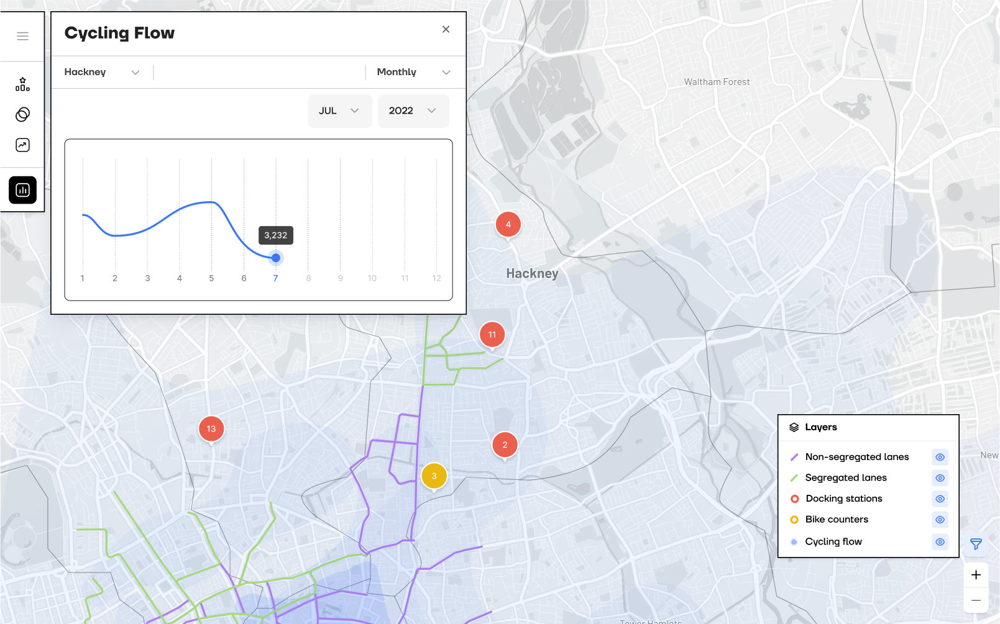
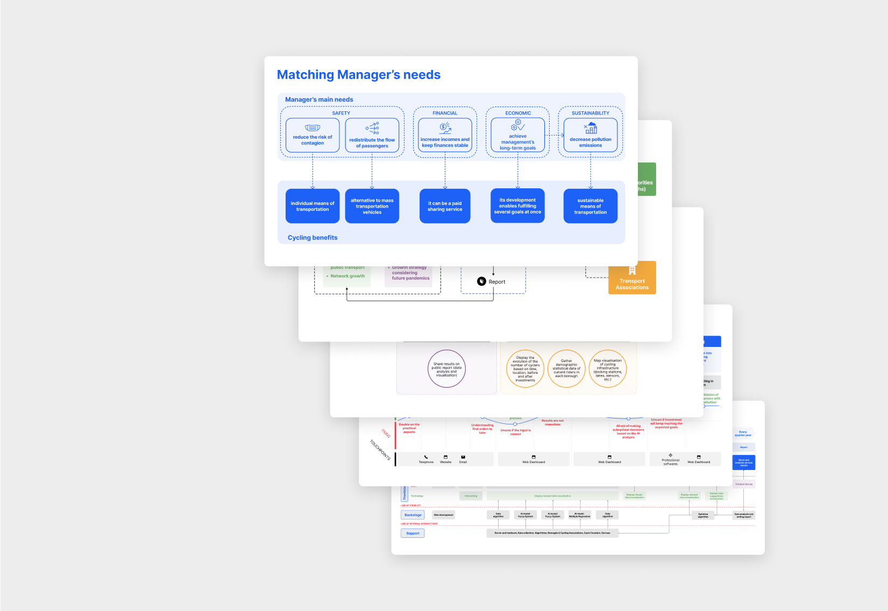

CYCLECITY
02/07
UX/UI

LIFE IN PLASTIC
07/07
CycleCity is a data-driven dashboard designed to help public transport managers make informed decisions about cycling infrastructure investments. By analysing key factors like job density and car ownership, it provides insights into their impact on cycling rates. This enables more strategic planning to boost cycling uptake, reduce congestion, and enhance urban mobility. In turn, CycleCity supports public health and sustainability goals while also contributing to long-term profitability.
Year
2023
Role
Desk Research
Concept Development
Service & UX Mapping
UI Design
User Testing
Tools used
Figma
Context
AI Through Design Course
UI Design: Defining the building blocks
The dashboard centres on three parts: the map, navigation bar, and modals. The map and nav bar are always visible, guiding every interaction. Modals change based on what the user selects, and the map’s behaviour adapts accordingly. The design uses brand colours plus distinct hues to clearly show different data on the map.

how cyclecity works:
RANKs optimal DISTRICTS for investment
An AI model assigns three ranks, one per cycling infrastructure type, based on each district’s suitability. The UI also displays key data tailored to each infrastructure type.


Identifies the appropriate typology of intervention
Provides guidance on where to place cycling infrastructure based on each district’s primary cycling purpose, commuting or leisure, and presents key statistical data to inform planning.


predicts future cycling rates
By simulating changes to specific features, managers can use the AI model to predict future cycling rates and make informed decisions.

shows cycling activity
Displays the total number of cyclists in a selected timeframe, supported by a heatmap that highlights areas of higher cycling activity to help managers understand usage levels.

How can Ai support impactful decisions?
Mapping the service helped break down the complex challenges faced by public transport managers, like those in Transport for London. By focusing on their goals, we translated needs into AI models, turning complex data into a decision support system that enables smarter planning, benefiting both transport providers and the people who depend on them.
Manager’s needs
Involve devs early on especially if the UI Kit is for an existing product. They need to be involved to set up the foundations.
Service System Map
Involve devs early on especially if the UI Kit is for an existing product. They need to be involved to set up the foundations.
Offering Map
Involve devs early on especially if the UI Kit is for an existing product. They need to be involved to set up the foundations.
User Journey
Involve devs early on especially if the UI Kit is for an existing product. They need to be involved to set up the foundations.
Service Blueprint
Involve devs early on especially if the UI Kit is for an existing product. They need to be involved to set up the foundations.
Key takeaways

service design tools
The employment of service design tools and maps allowed for a clearer picture of the project’s complexity, which in turn helped us identify it strengths and weaknesses.
AI integration
We learnt how different AI models can answer to the different needs of the end-user and bring value to the stakeholders involved in the service.
meeting the user needs
The interviews and usability tests on 2 managers of transport companies, our end-users, helped us correct, clarify, validate and get suggestions on improvements.